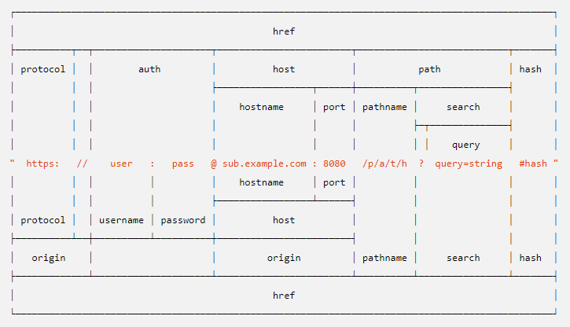

官网下载地址：http://nodejs.cn/
/* 开启一个服务器*/
var http = require('http');
// 建立服务器
var app = http.createServer(function(request, response) {
response.writeHead(200, {
"Content-Type": "text/plain"
});
response.end("Hello world!");
});
//启动服务器
app.listen(80,function(){
console.log('服务器已运行')
})/*
什么是promise?
promise是es6中新增的承诺对象，用于对异步的操作进行消息的传递
promise的状态?
Pending 等待中
Resolved 成功
Rejected 失败
Pending => Resolved
Pending => Rejected
promise 有什么用？
promise可以传递异步消息
由于异步的返回结果时间顺序不可控，所以需要使用promise来统一控制输出结果
*/
var promise = new Promise(function(resove,reject){
resolve()
})
//调用对象
promise.then(res>{
//成功的回调
}).catch(err=>{
//失败的回调
})
//利用promise对象的all方法可以实现手动调整输出顺序，相当于把异步变为同步
Promise.all([p1,p2]).then(datas=>{
//返回数组
})在内存中开辟了一个临时区域，用于存放我们需要运算的字节码
var buf = new Buffer(大小) //创建5个字节的缓存区
buf.write('a') //存入一个字节 转成16进制 的Ascall码的61 在node中默认使用utf-8编码，一个中文3个字节var buf = new Buffer([十进制编码]) //数字小可以var buf = new Buffer('字符串')buf.write('字符串')buf.toString()buf.copy(buf2)//异步：定义一个回调函数，接收读取到的内容
fs.readFile('文件路径',(err,data)=>{})
//同步：几乎所有fs的函数都有同步版本，只需在异步版本后面加Sync即可 （Async：异步）
fs.readFileSync('文件路径')同步版本:
fs.writeFileSync('文件名'，'数据')异步版本:
fs.writeFile('文件名'，'数据'，funciton(err){/*写完文件以后执行的代码*/})fs.stat('文件名',function(err,state){
//state时文件信息对象，包含了常用的文件信息
//size： 文件大小，单位字节
//mtime: 文件修改时间
//birthtime 文件创建时间
//方法
.isFile() //判断当前查看的对象是不是一个文件
.isDirectory() //判断是不是一个目录
})fs.unlink('文件名',function(err){}) fs.rmdir()fs.readdir()fs.stat()fs.unlink()//递归调用自己fs.rmdir()var fs = require('fs');
var path = require('path');
function rmdir(p){
//获取文件列表
var list = fs.readdirSync(p);
list.forEach((item)=>{
//拼接路径
let p1 = path.join(p,item);
//判断是否为文件
if(fs.statSync(p1).isFile()){
fs.unlinkSync(p1);
}else{
//递归调用自己
arguments.callee(p1);
}
})
//删除空文件夹
fs.rmdirSync(p);
}
rmdir('./data1');//可读取数据的流
var fs = require("fs");
var data = '';
// 创建可读流
var readerStream = fs.createReadStream('input.txt');
// 设置编码为 utf8。
readerStream.setEncoding('UTF8');
// 处理流事件 --> data, end, and error
readerStream.on('data', function(chunk) {
data += chunk;
});
readerStream.on('end',function(){
console.log(data);
});
readerStream.on('error', function(err){
console.log(err.stack);
});
console.log("程序执行完毕");//可写入数据的流
var fs = require("fs");
var data = 'hello world';
// 创建一个可以写入的流，写入到文件 output.txt 中
var writerStream = fs.createWriteStream('output.txt');
// 使用 utf8 编码写入数据
writerStream.write(data,'UTF8');
// 标记文件末尾
writerStream.end();
// 处理流事件 --> data, end, and error
writerStream.on('finish', function() {
console.log("写入完成。");
});
writerStream.on('error', function(err){
console.log(err.stack);
});
console.log("程序执行完毕");var fs = require("fs");
// 创建一个可读流
var readerStream = fs.createReadStream('input.txt');
// 创建一个可写流
var writerStream = fs.createWriteStream('output.txt');
// 管道读写操作
// 读取 input.txt 文件内容，并将内容写入到 output.txt 文件中
readerStream.pipe(writerStream);
console.log("程序执行完毕");//压缩文件
var fs = require('fs');
var zlib = require('zlib');
// 压缩 input.txt 文件为 input.txt.gz
fs.createReadStream('input.txt')
.pipe(zlib.createGzip())
.pipe(fs.createWriteStream('input.txt.gz'))
console.log("文件压缩完成。");
//解压文件
var fs = require("fs");
var zlib = require('zlib');
// 解压 input.txt.gz 文件为 input.txt
fs.createReadStream('input.txt.gz')
.pipe(zlib.createGunzip())
.pipe(fs.createWriteStream('input.txt'));
console.log("文件解压完成。");path.nomalize(p)/*使用path.jon拼接文件路径和 连接符 拼接优点
1.自动帮我们添加路径分隔符（根据当前操作系统）
2.自动改正错误的路径分隔符
*/
path.join(path1,path2)
let url = path.join(__dirname,path1); //常用path.dirname(p)path.basename(p)path.extname(p)path.parse(path)path.format(path)
var http = require('http');
http.get('url',function(res){
//res 是返回对象，接收到服务器响应的所有内容
res.on("data",function(a){
a //以流的方式获取数据 //每节64kb
})
})是一种自动获取网页内容的程序
遍历数据，批量获取所需要的内容